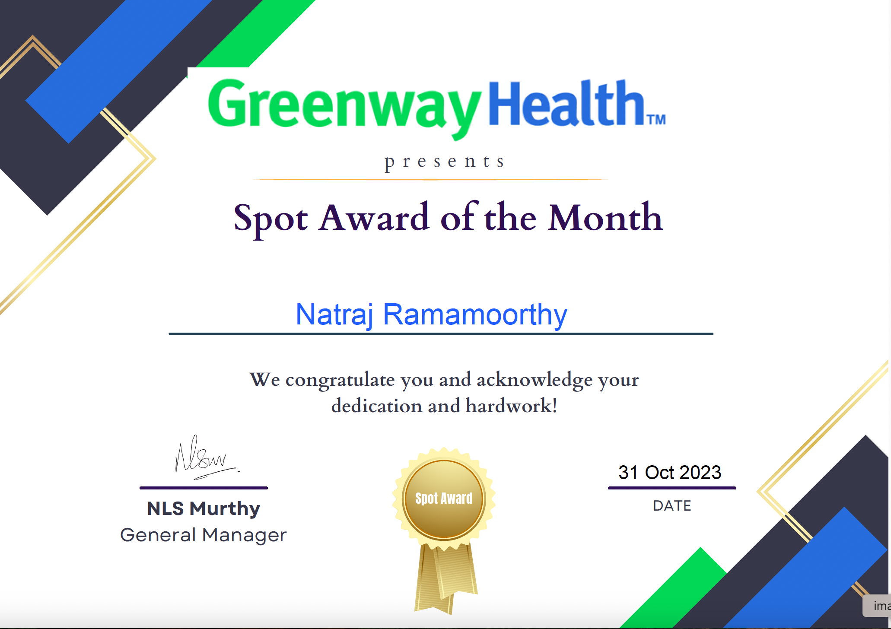
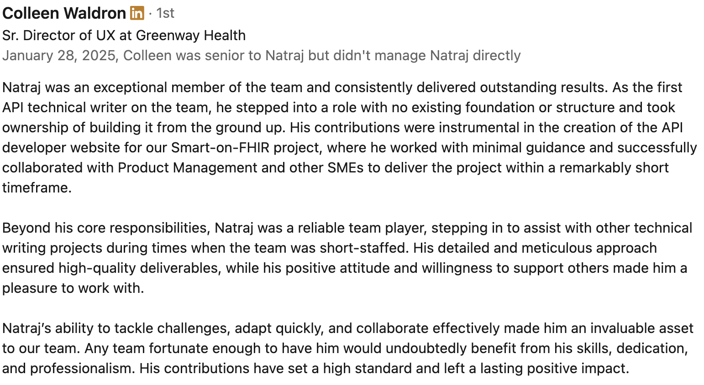
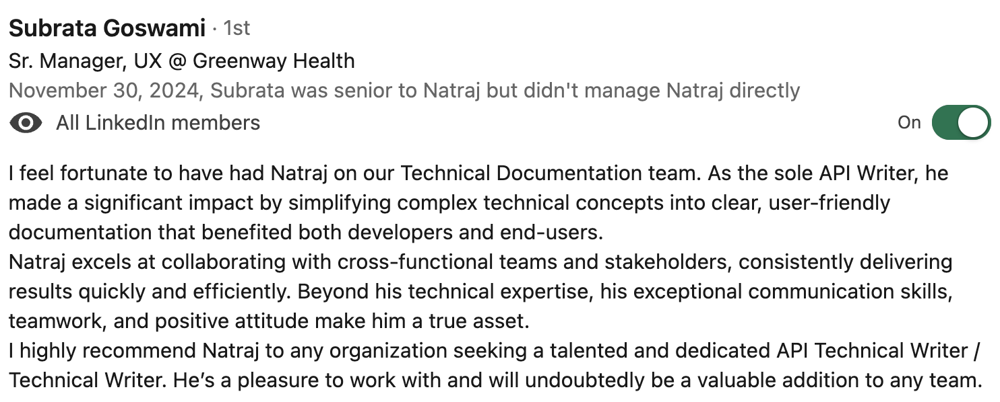
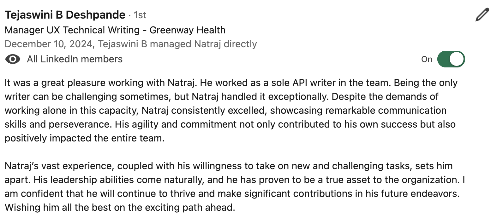
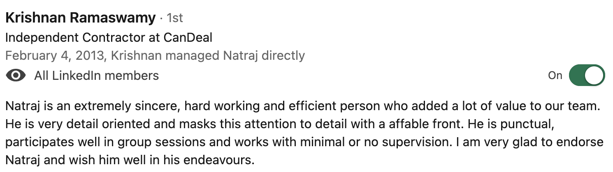

Natraj Ramamoorthy
With more than 15 years of experience in Technical Writing and Developer Documentation, I specialize in:
- Scoping, planning, and developing high-quality technical and developer-focused content
- Leading end-to-end documentation projects across product lifecycles
- Managing and mentoring technical writing teams for consistency and quality
- Designing scalable information architecture for improved content discoverability
I have worked across industries such as Healthcare, Banking, Media, Telecom, Networking, and FinTech, delivering measurable improvements in user engagement, support reduction, and product adoption.
Clients that I have worked for include Greenway Health, ZEE5, Katalon, Keysight Technologies, Cisco, Accenture, and Access Microfinance Holdings (Germany), etc.
I am comfortable working as an individual contributor and in a collaborative setup as well, such as docs-as-code team environments. I am well-versed with Agile and SDLC methodologies.
Documentation Projects
The information below gives a summary of the companies, projects, and topics I have worked on as a technical writer. Some documents could not be shared because the company considers them to be private, but I have included a few samples that I was officially allowed to use. I have also added links to public documentation for projects I contributed to.
Access Microfinance Holdings focuses on building and managing a network of microfinance banks in developing and transition countries, specifically targeting micro, small, and medium-sized enterprises (MSMEs). As a freelance technical writer for Access Holdings, I was involved in documenting APIs related to banking and finance, DevOps workflows, updating their Confluence pages for Customer-centric information, Loans, Credit and Debit Cards, Transactions, etc. Read more →
Greenway Health provides Electronic Health Records (EHR), practice management, and revenue cycle management solutions that help practices grow profitably, remain compliant, and improve patient outcomes. I developed content such as Brochures for Greenway Health's Knowledge Center, API documentation for Fast Health Interoperability Resources (FHIR) and client-facing toolkits within the ambit of Greenway's healthcare platform. Read more →
Accenture Plc (Accenture) is a global professional services company. It provides a wide range of services and solutions in strategy, consulting, digital, technology and operations areas. The company provides consulting, technology and outsourcing services to several industries including agribusiness, automotive, banking, capital markets, chemicals, media and technology, and communications. Accenture operates business processes for enterprise functions such as sourcing and procurement, finance and accounting, supply chain, marketing and sales on behalf of clients. It also offers industry-specific services including banking, platform trust and safety, insurance and health services. It has business presence in the Americas, Europe and Asia-Pacific. Accenture is headquartered in Dublin, Ireland. Read more →
Katalon offers a software quality management platform with tools for automating tests across web, API, mobile, and desktop applications. t enables users to create, execute, and manage tests efficiently, offering features for both manual and automated testing. Katalon also includes capabilities for test reporting, integration with CI/CD pipelines, and collaboration. I created product documentation for Katalon Studio and Katalon TestCloud, covering areas like test creation, execution, reporting, and maintenance. Read more →
ZEE5 is an Indian video-on-demand streaming service that offers a wide range of content, including movies, TV shows, web series, music videos, and live TV. ZEE5 offers a vast library of content, including over 4,500 TV shows and movies, and 90 live channels. It provides content in multiple languages and caters to both free and subscription-based users. I authored developer documentation, API references, Frequently Asked Questions (FAQs) for ZEE5's Help Centerand deployment guides for ZEE5's OTT platforms across Web, Android and iOS spaces, respectively. Read more →
Mzaya Pvt. Ltd. specializes in energy optimization solutions, focusing on improving energy efficiency and managing energy demand through dynamic forecasting and optimized scheduling. It's adaptive intelligence system based statistical models generate forecasts that capture complex relationships and produce impressively accurate forecasts. I developed marketing collateral and also end-to-end online user guides covering core workflows like Data Setup, Demand Forecasting, Portfolio Optimization and Reporting, etc. Read more →
Keysight Technologies provides electronic design and test solutions, primarily for the communications, networking, and electronics industries. They offer software, hardware, and services for various industries, including communications, networking, and electronics. Keysight's solutions are used to accelerate innovation in areas like 5G, 6G, automotive, aerospace, and quantum computing. I created product documentation for Keysight's electronic test solutions, namely Oscilloscopes and test platforms. Read more →
KONE is a global leader in the elevator and escalator industry, providing a range of products and services including new elevator and escalator installations, modernization of existing equipment, and maintenance services. They offer elevators, escalators, automatic doors, and related services like maintenance and modernization. As a Technical Writer at Lionbridge Technologies, I created documentation detailing various aspects of elevator models for KONE. Read more →
Skills
Professional Expertise
- Technical communication
- Technical content strategy
- Information architecture
- UX writing
- Content design and development
- Product documentation
Documentation Deliverables
- Standard Operating Procedures (SOPs)
- User manuals
- Implementation guides
- Release notes
- Online help
- Wikis
- API documentation
- Software Requirement Specification (SRS)
- Developer Summary Report (DSR)
- Quality Assurance Summary Review (QASR)
- Quality Assurance Plan (QAP)
- Validation Plan (VP)
- Error messages
Writing and Authoring Tools
- Markdown
- Google Docs
- Microsoft Office
- VS Code Editor
- MadCap Flare
- FrameMaker
- RoboHelp
- Arbortext Editor
- Oxygen XML Editor
API Documentation Tools
- Swagger
- Postman
- ReadMe.IO
Content Management Platforms
- WordPress
- Zendesk
AI and Project Collaboration Tools
- Microsoft Copilot
- GitHub Copilot
- JIRA
- SharePoint
Visual & Diagramming Tools
- SnagIT
- Snipping Tool
- Visio
Professional Communities
- "Write-the-Docs" Slack group
- LinkedIn Technical Writers
Experience
- Authored FHIR API documentation, SDK guides, and release notes using ReadMe.IO and VS Code, boosting user engagement by 30%.
- Developed online help, PDFs, and instructional toolkits with MadCap Flare, improving client training by 20%.
- Created FAQs, release notes, and knowledge base content aligned with product updates.
- Collaborated closely with product managers and developers via Jira tickets, Sprints, Daily stand-ups, etc. thereby ensuring that documentation proceeds along with product development, while managing version control in Git.
- Performed peer reviews and content audits to maintain accuracy and consistency across all deliverables.
- Produced new feature documentation and enhanced user manuals using Markdown and VS Code, improving user satisfaction by 60%.
- Revamped document quality with linting processes in Git, reducing formatting issues by 50%.
- Collaborated with SMEs and managed tasks in Jira for agile documentation workflows.
- Supported Katalon Studio, the automated testing platform of Katalon with clear, user-friendly content.
- Created API documentation, user manuals, and installation guides for ZEE5 applications for the Web, iOS, and Android platforms, which resulted in a reduction of support tickets by 30%.
- Authored release notes and deployment guides using Swagger, Confluence, and MadCap Flare.
- Designed process flows for SVOD and AVOD models, and developed marketing materials including brochures.
- Standardized templates and improved documentation processes across teams.
- Delivered technical manuals, and cloud-based solution guides for NextGen, Cisco, and Keysight Technologies, thereby increasing user engagement and reducing support tickets.
- Authored release notes and streamlined procedural content for healthcare and cloud-based applications.
- Led peer reviews that improved document accuracy by 90%.
- Translated complex technical information into clear, user-friendly documentation for engineers and the end user as well.
- Authored Standard Operating Procedures (SOPs), Installation Coefficient (IQ), Operational Coefficient (OQ), Validation Plans, Development Summary Report (DSR), Quality Assurance Systems Analysis Review (QASR), Quality Assurance Plan (QAP) and compliance documentation. This improved client satisfaction by 60%.
- Managed documentation versions using MIDAS and supported defect analysis through Jira.
- Created functional test plans, test cases and collaborated on UI/UX improvements.
- Simplified complex technical processes into easy-to-use guides for diverse audiences.
- Produced user guides, web help, and video tutorials for tax, embedded systems, and energy-saving solutions, increasing customer satisfaction by up to 50%.
- Authored procedural manuals for KONE elevators and mobile software, reducing support load by 20%.
- Collaborated on Microsoft certification exam content and designed marketing brochures.
- Used tools like FrameMaker, RoboHelp, and Camtasia for high-impact documentation.
Education
Masters in Computer Management
Master of Science
Bachelor of Science
Honors & Awards
Spot Award for Excellence in Technical Documentation – October 2023
References
Feedback for my work as perceived by my colleagues, is given below.
Reference 1:  Reference 2:  Reference 3:  Reference 4: 
Contact
Email: natraj282000@yahoo.com